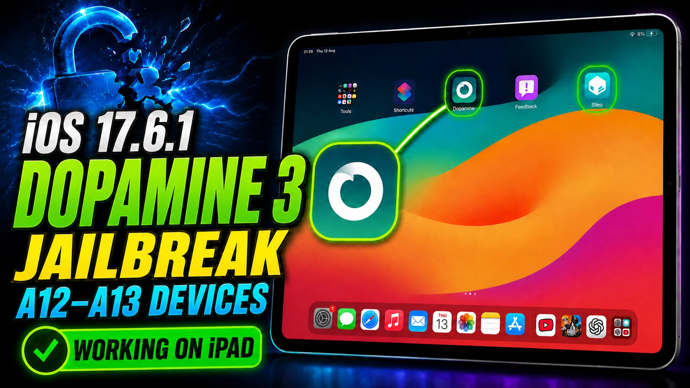

Dopamine 3 Jailbreak for iOS 17.6.1
Follow the complete A12-family and A13 walkthrough with official downloads, Sileo setup, real iPad proof, and the compatibility limit newer devices need to know.
Open the full guide →Useful iPhone tweaks and apps, rootless compatibility, practical tutorials and direct original sources.

Release details and guides organized so you can quickly see what a tweak does, where it comes from, and what to verify.
Follow the complete A12-family and A13 walkthrough with official downloads, Sileo setup, real iPad proof, and the compatibility limit newer devices need to know.
Open the full guide →
Compare Dopamine 3 and TrollStore by purpose, rootless behavior, documented compatibility categories, and the limits of permanent IPA installation in TrollStore.
Read guide →
PhotosCore 1.1.0 lists viewing, thumbnail layout, Search, album, dark appearance, and iPad sidebar controls for Apple Photos.
Read guide →
Review LockGlass 1.2, a commercial Lock Screen tweak listed for iphoneos-arm64, including its documented purpose, firmware metadata, and dependency checks.
Read guide →
Remove Widget Background 2.1.1 is a Home Screen tweak by 82flex. Review its listed function, architecture variants, firmware requirement, and dependencies.
Read guide →Double-tap empty Home Screen space to lock your iPhone, with one clean enable switch for the verified runtime.
Read guide and download →Redesigned Favorites, Recents, Contacts, and Keypad with the 0.4.16 stability rollback for RootHide and rootless setups.
Read guide and download →Review supported hardware, preparation, the palera1n process, and common troubleshooting steps before you begin.
Read the tutorial →Browse useful packages by category, with repository and installation details gathered in one place.
Browse the collection →Go straight to the type of jailbreak information you need.
Features, package metadata, source links, and honest compatibility notes.
Explore tweaks → 02Preparation, supported devices, installation steps, and troubleshooting.
Open tutorials → 03Collections and package information for modern rootless environments.
Browse rootless → 04Original Next Jailbreak videos when seeing each step is more useful.
Watch videos →Repository metadata can confirm a package name, version, architecture, dependencies, and developer notes. It cannot always confirm every iOS version or device combination.
Next Jailbreak keeps those limits visible, links to the original source, and does not mirror third-party tweak packages in its guides.
See the guide library →Important checks that apply to every jailbreak and package guide.
No. Modifying system software can cause instability, security issues, data loss, or compatibility problems. Back up important data and use instructions confirmed for your exact device and software version.
No. Architecture is one compatibility fact. Device model, iOS release, bootstrap, dependencies, and developer notes may also matter.
Version, architecture, dependencies, and feature claims are compared with public repository metadata and original source pages before publication.
Information pages do not mirror third-party package files. They retain a direct link to the original source so you can verify current details there.